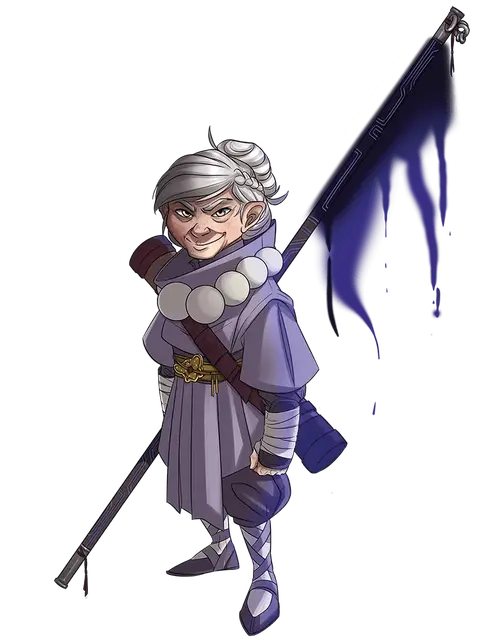

Рози Пчелиное жало
Rosie Beestinger
Маленький Гуманоид (Полурослик), хаотично-добрый, именной НИП

Класс Доспеха 15 (защита без доспехов)
Хиты 45 (10к6 + 10)
Скорость 40 футов
| мод | спас | ||
|---|---|---|---|
| СИЛ | 8 | −1 | +1 |
| ЛОВ | 16 | +3 | +5 |
| ТЕЛ | 12 | +1 | +1 |
| мод | спас | ||
|---|---|---|---|
| ИНТ | 12 | +1 | +1 |
| МДР | 14 | +2 | +2 |
| ХАР | 14 | +2 | +2 |
Навыки Акробатика +5, Запугивание +4, История +3, Скрытность +5
Чувства пассивное Восприятие 12
Языки Общий, Драконий, Полуросликов, Эльфийский
Опасность 3 (700 опыта)
Бонус мастерства +2
Особенности
Храбрый. Рози совершает с преимуществом спасброски от испуга.
Увёртливость. Если Рози попадает под действие эффекта, который позволяет совершить спасбросок Ловкости, чтобы получить половину урона, Рози не получает урона при успехе и половину урона при провале. Она не может использовать эту особенность, если становится недееспособным.
Проворство полуросликов. Рози может проходить сквозь пространство, занятое существами, чей размер больше её.
Врождённое колдовство. Базовой характеристикой Рози является Мудрость (Сл спасброска от заклинания 12). Она может накладывать следующие заклинания, не нуждаясь в материальных компонентах:
• Неограниченно: малая иллюзия [minor illusion], священное пламя [sacred flame], чудотворство [thaumaturgy];
• 1/день каждое: приказ [command], тьма [darkness], тёмное зрение [darkvision], бесследное передвижение [pass without trace], тишина [silence].
Теневой прыжок. Когда Рози находится в области тусклого света или тьмы, она может бонусным действием может телепортироваться на расстояние до 60 фт. в свободное пространство, которое он может видеть и которое так же находится в тусклом свете или тьме. После телепортации, она получает преимущество на первую рукопашную атаку, которую она совершает до конца хода.
Действия
Мультиатака. Рози совершает три атаки, после чего совершает две атаки Безоружным ударом.
Посох Мастера (Боевой посох +1). Рукопашная атака оружием: +6 к попаданию, досягаемость 5 футов, одна цель. Попадание: 7 (1к6 + 4) дробящего урона или 8 (1к8 + 4) дробящего урона, если используется двумя руками.
Безоружный удар. . Рукопашная атака оружием: +5 к попаданию, досягаемость 5 футов, одна цель. Попадание: 6 (1к6 + 3) дробящего урона. Безоружные удары Рози считаются магическими.
Реакции
Отражение снарядов. В ответ на попадание по нему атакой дальнобойным оружием, Рози отражает снаряд. Урон от этой атаки уменьшается на 1к10 + 9. Если урон уменьшился до 0, адепт поймал снаряд, если он достаточно мал, чтобы держать его одной рукой, и у Рози есть свободная рука.
Описание
“Ну, у меня есть эта банка с глазными яблоками...”
При весе чуть менее 30 фунтов и бабушкином поведении, подобающем её преклонному возрасту, Рози Пчелиное жало легко принять за человека, находящегося не на той стороне отношений "агрессор/жертва". Но это путаница, которую мало кто допускает более одного раза. Терпеливая и прилежная, Рози обучила не одного недовольного тому, что халфлинг называет "соусом" - вихрем ударов ногами и кулаками по одному или другому бедру, которые могут вдохновить даже самого крутого полуорка бежать туда, где Рози нет. По мере того, как все большее число людей слышит рассказы о ее мастерстве, слава картографа команды "С" среди ее собратьев-полуросликов стала не чем иным, как легендарной. Тем не менее, это обожание может быть усилено огромным количеством полуросликов, связанных с Рози. У нее огромное количество родных и приемных детей, многие из которых последовали за своей матерью по пути карьеры авантюриста.
Цели Рози всегда были более сложными, чем просто поиск приключений. Она долго искала высший смысл в звездах и искала оправдания своей вере в то, что ее связи с ее обширной семьей отражаются в бесконечных движениях и замысловатых узорах неба. Однако клан Пчелиных жал имеет менее метафизическую репутацию в глазах многих людей, поскольку постоянно циркулирующие слухи пытаются связать семью с различными и гнусными преступными предприятиями халфлингов. Естественно, Рози ничего об этом не знает. Конечно, ее прозвище "Бабушка ночи", но это, вероятно, ничего не значит.